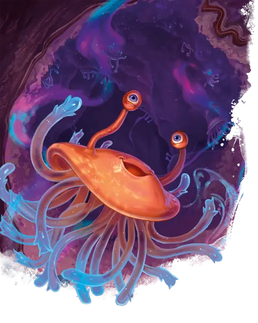

Фламф
Flumph
Маленькая Аберрация, Принципиальная Добрая

Класс Защиты 12 Инициатива +2 (12)
Хиты 7 (2к6)
Скорость 5 футов, Полёта 30 футов (парит)
| мод | спас | ||
|---|---|---|---|
| СИЛ | 6 | −2 | −2 |
| ЛОВ | 15 | +2 | +2 |
| ТЕЛ | 10 | +0 | +0 |
| мод | спас | ||
|---|---|---|---|
| ИНТ | 14 | +2 | +2 |
| МДР | 14 | +2 | +2 |
| ХАР | 11 | +0 | +0 |
Уязвимость к урону Психический
Чувства Тёмное зрение 60 футов, пассивное Восприятие 12
Языки понимает Глубинную речь, но не говорит, Телепатия 60 фт.
Опасность 1/8 (25 опыта; БВ +2)
Особенности
Продвинутая телепатия. Фламф воспринимает содержание любых телепатических сообщений в пределах 60 футов от него.
Опрокинутая беспомощность. Когда фламф получает состояние Опрокинутый, бросьте любую кость; при выпадении нечётного числа он также получает состояние Недееспособный. В конце каждого своего хода фламф совершает спасбросок Ловкости Сл 10, при успехе прекращая на себе это состояние Недееспособный.
Телепатический покров. Мысли фламфа невозможно прочитать никакими способами, и магия не может определить его местоположение или наблюдать за ним на расстоянии.
Действия
Щупальце. Бросок рукопашной атаки: +4, досягаемость 5 фт. Попадание: 4 (1к4 + 2) урона Кислотой.
Вонючие брызги (1/день). Спасбросок Ловкости: Сл 10, одно видимое фламфом в пределах 15 футов от него существо. Провал: Цель покрывается зловонной жидкостью и источает смрад 1к4 часов, получая состояние Отравленный, пока вонь не пройдёт. Другие существа имеют состояние Отравленный, пока находятся в 5-футовой Эманации, исходящей от покрытой этой жидкостью цели. Цель может очиститься от вони, если искупается во время Короткого или Долгого отдыха.
Бонус мастерства +2
Среда обитания Подземье
Сокровища Магические